-
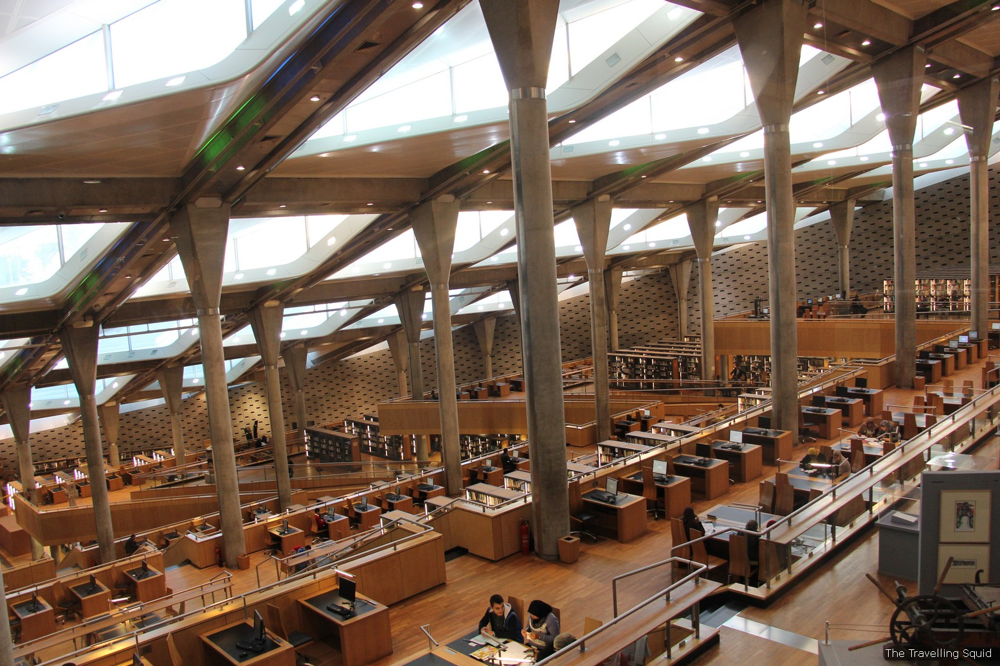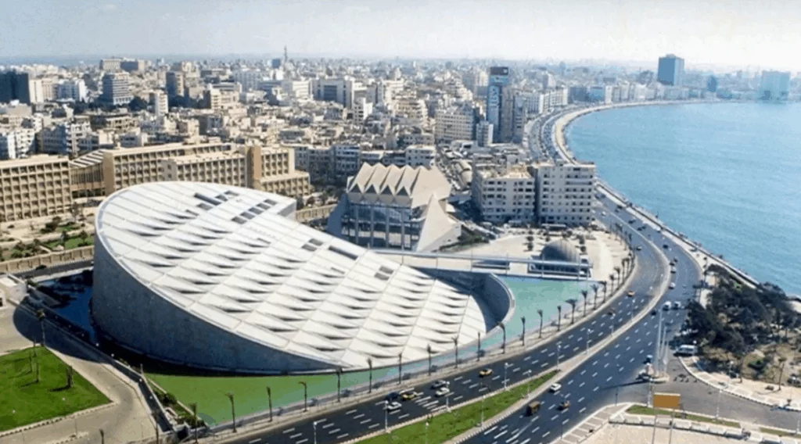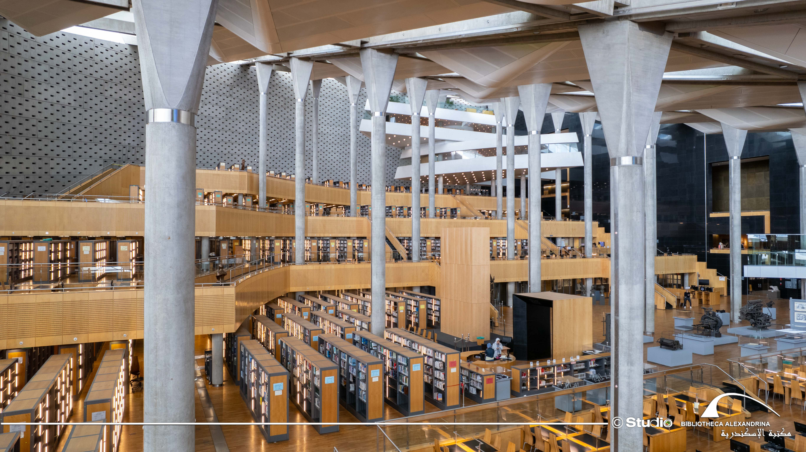
- BIBLIOTHECA ALEXANDRIA :
- The idea of rebuilding the Bibliotheca Alexandrina was first launched in 1974 after visiting U.S. President Richard Nixon asked to see the ancient Library of Alexandria—which had disappeared some two millennia earlier. His gaffe prompted one of the truly grand public projects of the 20th century.
Won in competition by the young Norwegian-based architectural and design office of Snøhetta, the funding came from patrons as diverse as UNESCO, the country of France, and Saddam Hussein. From afar it looks like an obliquely tilted solar disk. A grill of aluminum panels functions like the mashrabyyra screens over the windows of traditional Egyptian houses, with deftly incised north-facing clerestories that allow in daylight without glare
-
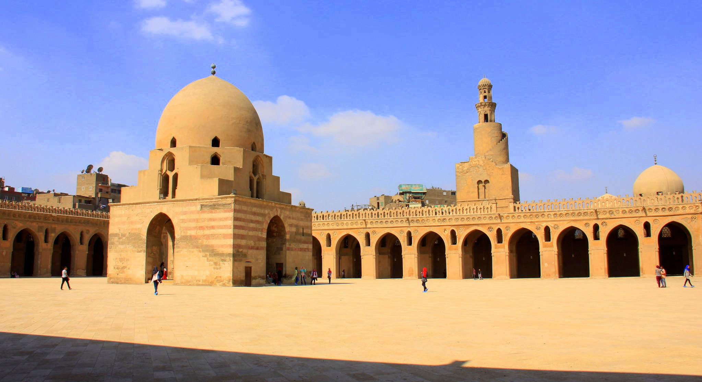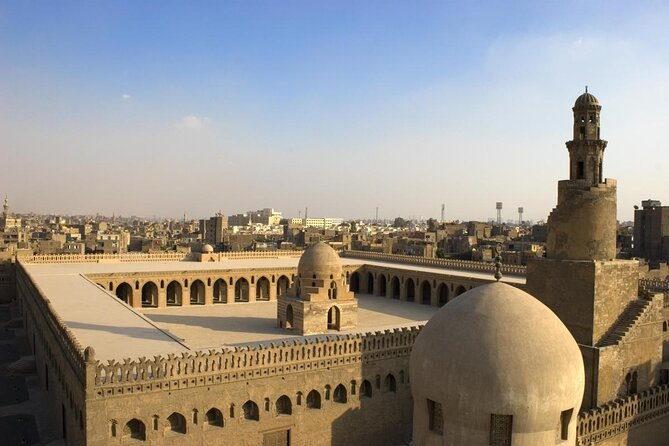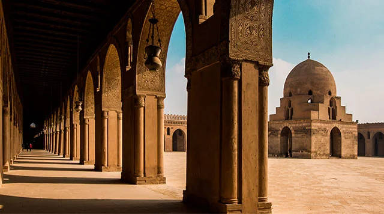
- MOSQUE OF AHMED IBN TULUN :
-
The monumental Mosque of Aḥmad ibn Ṭūlūn is one of the few remnants from the classical Islamic period, when Abbasid caliphs ruled the Islamic world from their capital Samarra in Iraq. The governor who built the mosque declared his independence in 868 and founded the short-lived Ṭūlūnid Dynasty. When the Abbasids reconquered Egypt in 905, they left nothing standing save for Ibn Ṭūlūn. Over the centuries the mosque—Cairo’s oldest, having been completed in 879—has served as a caravanserai, or travelers’ inn, as well as a hideout for body snatchers.
The complex consists of a mosque surrounded by an enclosure. On all but its qibla side (the one facing Mecca), there are narrow enclosed wings, or ziyadas. The ziyadas protect the sanctified inner space and lead into the immense courtyard where 13 pointed arches distinguish every side of the mosque. The northern ziyada contains a helix-shaped minaret with a Babylonian ziggurat-influenced spiraling external staircase. Inside the mosque the mihrab (prayer niche) of the prayer hall is flanked by two columns with perforated capitals. Behind the qibla wall was the Dar al-Imara giving access to the maqsura, a private area used by the caliph and his close circle during Friday prayers. A sycamore-wood frieze runs around the inner arches and the Kufic calligraphy running above it retells one-fifth of the Qurʾān. (Anna Amari-Parker)
-
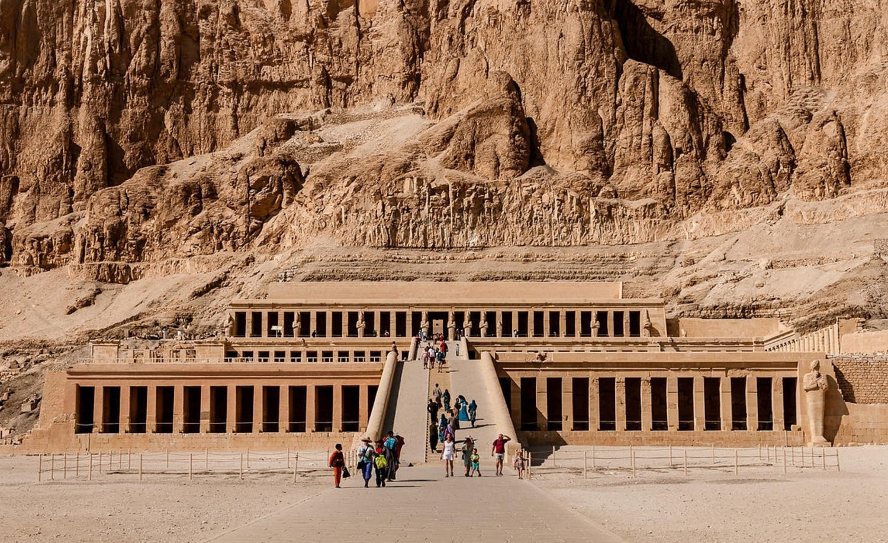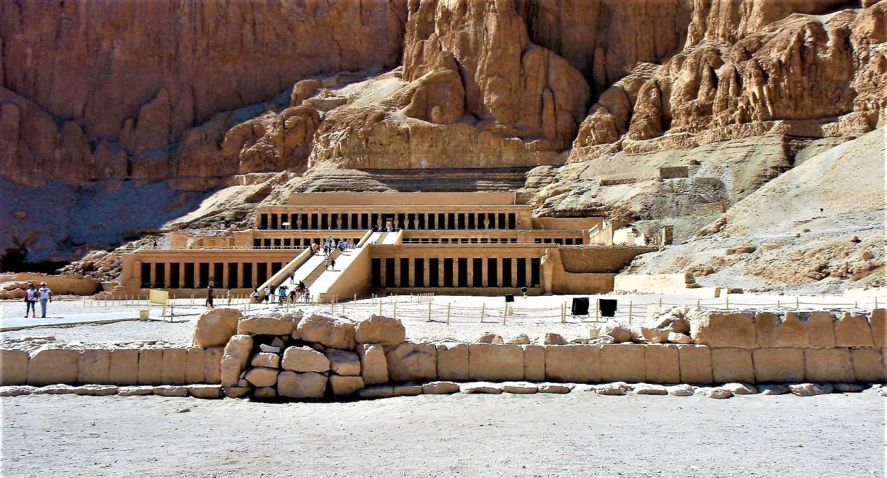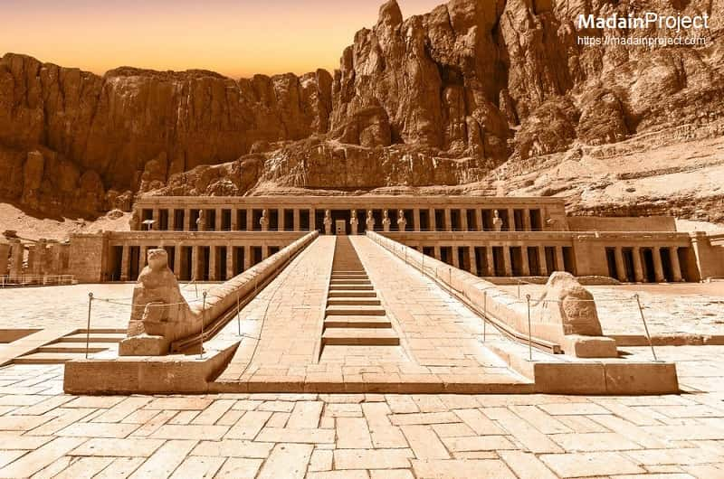
- TEMPLE OF HATSHEPSUT :
-
Queen Hatshepsut was the fifth pharaoh of the Eighteenth Dynasty of ancient Egypt. She founded a vast number of buildings during her reign, the most spectacular of which is her own funerary temple at Deir el-Bahari, a site on the west bank of the Nile opposite Luxor. It is positioned in a straight line from the tomb she commissioned for herself in the Valley of the Kings that lies on the other side of the mountain. Archaeologists estimate that it took 15 years to build the temple.
The focal point of the temple is the Djeser-Djeseru, or “The Sublime of Sublimes,” which consists of three elegant colonnaded terraces standing 97 feet (29.5 m) high and dramatically built into a high mountain face that rises above it. It is notable for its perfect symmetry, which predates Greece’s Parthenon by 1,000 years. Djeser-Djeseru is reached by two ascending ramps that were once planted as gardens. The second ramp leads to the upper terrace and the Punt Portico, which is supported by two rows of square columns. Queen Hatsheput appears in the portico in statue form, sculpted to appear as the god Osiris. (Carol King)
-

 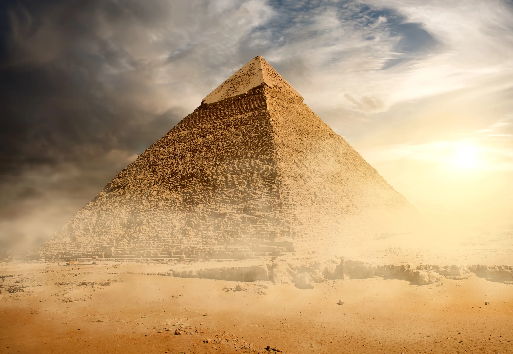
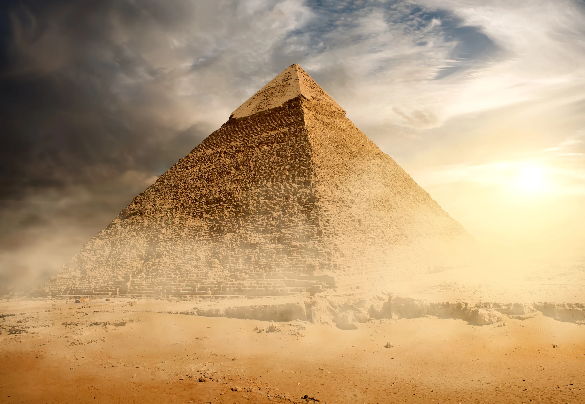
- GREAT PYRAMID OF KHUFU :
-
The Great Pyramid of Khufu is the largest and most northerly of the three famous pyramids at Giza, and the only one of the Seven Wonders of the World left standing today. As the largest pyramid ever built, it is a wonder mainly because of its sheer scale and the incredible precision with which the building work was executed.
It is assumed to be the burial place of Egyptian pharaoh Khufu, who ruled 2589–66 BCE, but only an empty sarcophagus has been found. Designed by Khufu’s cousin Hemon, the pyramid originally stood 482 feet (147 m) high with four equal sides each measuring 755 feet (230 m). The giant, stepped sides were originally covered with highly polished limestone casing stones. When in place, these stones, weighing some 15 tons apiece and slotted together with unerring accuracy, would have lent sheen to the structure in the sun. Some Egyptologists believe that the pinnacle of the structure may have been gilded. Inside the pyramid, the King’s Chamber contained a huge granite sarcophagus; the smaller Queen’s Chamber, a large angular doorway or niche. The other main features of the Great Pyramid are the Grand Gallery, ascending and descending passages, and the lowest part of the structure dubbed the “unfinished chamber.” (David Taylor)
-
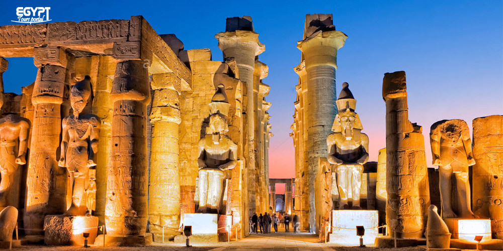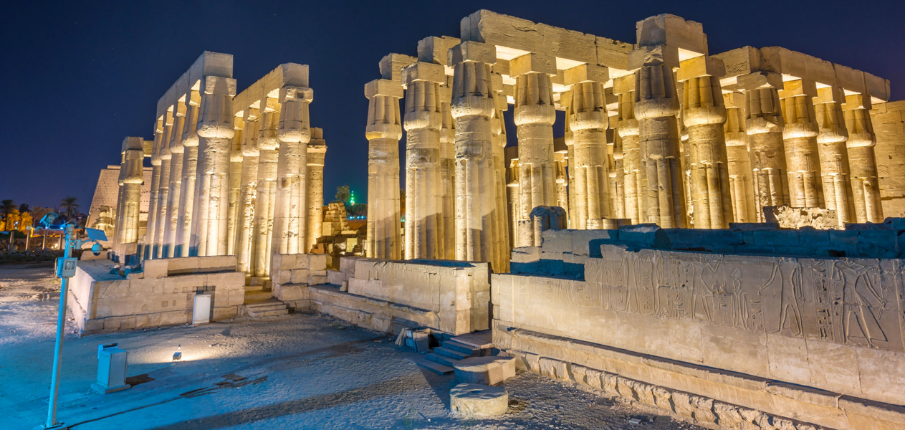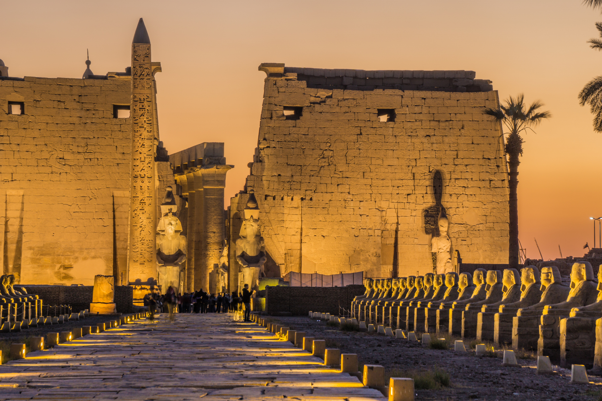
- LUXOR TEMPLE :
-
The Luxor Temple is an ancient Egyptian temple complex that lies on the east bank of the Nile, at what is now called Luxor and what was the ancient city of Thebes. It was dedicated to the Theban triad of gods—Amun, his wife Mut, and their son Chons—and was built on the site of a smaller Middle Kingdom structure for the god Amun. The earliest parts of the temple existing today date from 1408 BCE and were built during the reign of Amenhotep III. Access to the temple is via the Avenue of Sphinxes, which once stretched the 1.86 miles (3 km) from the Luxor Temple to the Temple of Karnak in the north. A 78-foot-high (24 m) obelisk built by Ramesses II in 1300 BCE lies at the end of the avenue at the entrance to the temple. Originally there were two obelisks, but the second was given to France’s King Louis-Philippe in 1829 and now stands in the Place de la Concorde in Paris.
The gateway leads into a peristyle courtyard, also built by Ramesses II. Both it and the obelisk were built at an oblique angle to the rest of the temple. The courtyard leads into a processional colonnade, 328 feet (100 m) long, built by Amenhotep III, and lined by 14 papyrus-capital columns. A second peristyle courtyard lies beyond the colonnade. The inner part of the temple is accessed via a hypostyle court with 32 columns. This inner sanctum comprises an antechamber that contains a mix of both Egyptian carvings and Roman stuccoes, reflecting the fact that at one time the Romans had also used the site as a place of worship. The temple also has a shrine dedicated to Amun and the Birth Room of Amenhotep III, which contains reliefs depicting the pharoah’s birth. (Carol King